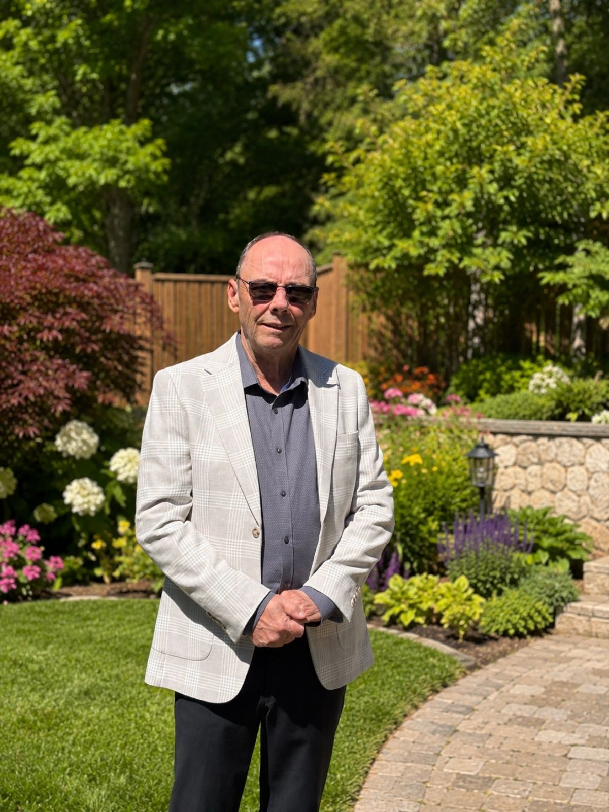
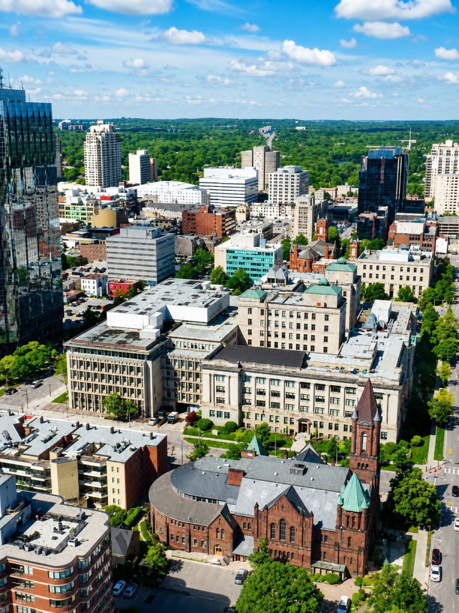
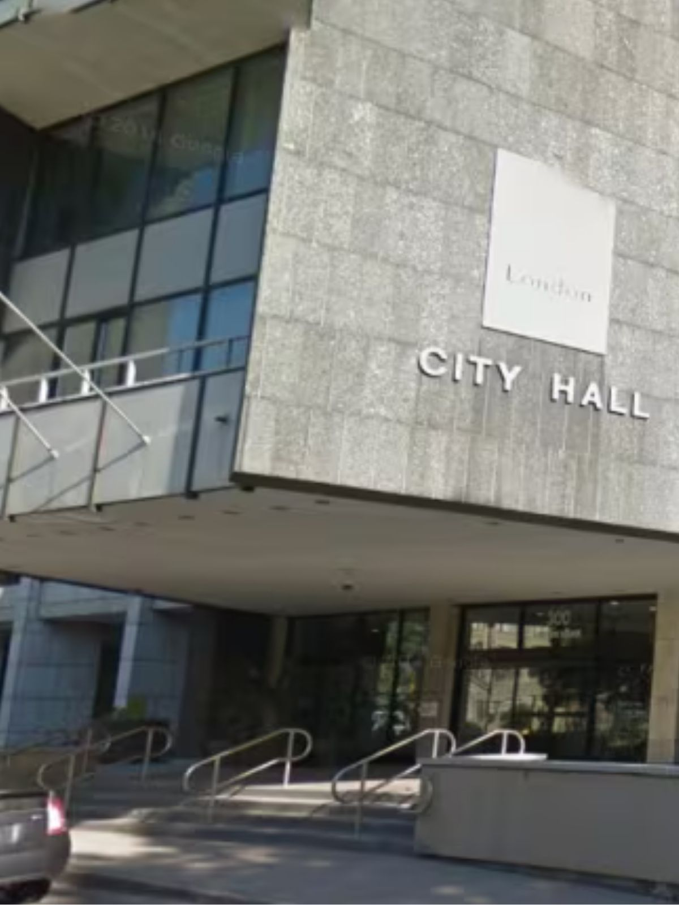

⌂
Strong neighbourhoods
Building safe, affordable communities where families can thrive.
London, Ontario
Real leadership. Practical solutions. A stronger London for the next generation.
London, Ontario
Real leadership. Practical solutions. A stronger London for the next generation.
Building safe, affordable communities where families can thrive.
Fixing what matters and investing in the future of our city.
Supporting first responders and keeping neighbourhoods safe.
Creating jobs, supporting business, and strengthening London’s local economy.
John Feher was born in St. Thomas and has spent most of his adult life in London. This is where he has built his life, raised his family, worked, owned a business, and watched the city change.
As a father with a son in his twenties, John is thinking not only about the London people are living in today, but the London the next generation will inherit. Housing, public safety, infrastructure, jobs, and the cost of living are not abstract policy issues. They shape whether young people can build a future here.
John’s experience as a business owner gives him a practical view of leadership: budgets have to make sense, decisions need follow-through, and people deserve straight answers. He also spent several years working with the Canadian Mental Health Association, giving him a deeper understanding of the human challenges many Londoners face. He is running for mayor to bring practical leadership, accountability, and compassion to City Hall.

Campaigns are not built from behind a desk. John is meeting residents, hearing concerns directly, and focusing the campaign on the issues people are living with every day — neighbourhood safety, infrastructure, affordability, and the future of the city.

Roads, construction disruption, transit reliability, and snow response need clearer planning and better communication.
Push for responsible growth, faster approvals, and neighbourhood planning that respects both affordability and quality of life.
Reduce friction, improve commercial corridors, support downtown confidence, and make London easier to invest in.
Connect spending to results and publish progress in plain language so residents know what improved.
London deserves a cleaner, more efficient approach that reflects how modern municipalities operate, improves reliability, and keeps neighbourhoods looking better.
John will not ask Londoners to settle for vague promises and quiet follow-up. The work should be measured, the progress should be public, and City Hall should be clear about what improved, what stalled, and what comes next.

Follow the latest campaign announcements, community meetings, and updates from John Feher’s campaign for Mayor of London.
John officially announced that he is running for mayor, beginning a campaign focused on practical leadership, stronger neighbourhoods, and a more accountable City Hall.
The campaign is hosting community meetings across the city to hear directly from residents about safety, infrastructure, housing, and the future of London.
Residents can help by attending upcoming events, sharing the campaign, requesting signs, volunteering, or donating by e-transfer.
Your contribution helps fund signs, printed materials, community meetings, voter outreach, and the practical tools needed to run a serious campaign across London.
Campaign contributions must follow Ontario municipal election rules. The campaign will use your information to confirm eligibility and issue the proper receipt.
Use your bank’s mobile app or online banking. These links open official Interac or bank help pages in a new tab.
Volunteer, request a lawn sign, host a conversation, or join campaign updates.